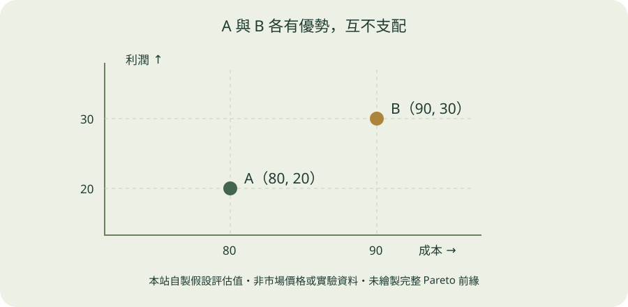

計畫說明兩種多目標處理方式：把多個目標合成一個適應值，或保留各目標分別比較。進階交易問題採用 Pareto 支配關係：一方案在所有目標都不差於另一方案，且至少一項較好，才構成支配。
計畫摘要｜§3.2.1 ET problem
原文定位
原始文件：CM03-f.docx
- §3.2.1 ET problem
段落起句：Over the years, researchers have been interested in making Genetic Programming (GP)
以僅有成本與利潤的假設方案為例：A 的成本 80、利潤 20；B 的成本 90、利潤 30。成本希望低、利潤希望高，所以 A 與 B 各有優勢，互不支配。這些是示意評估值，不是真實價格、會計帳或實驗結果；其餘條件假設相同。
示意範例｜本站自製教學情境，非計畫數據或實驗結果。
參考向量的權重不宜直接當成決策者對四個目標的偏好。該段將權重與分配到向量附近的非支配解數量連結，用於引導向量更新。因此不能未經證據就把四個研究目標各設為 25%，稱作計畫原定設定。
本站解讀｜§3.2.2 Adaptive reference vector update
原文定位
原始文件：CM03-f.docx
- §3.2.2 Adaptive reference vector update
段落起句：To fit the irregular Pareto front shape, this study based on Liu